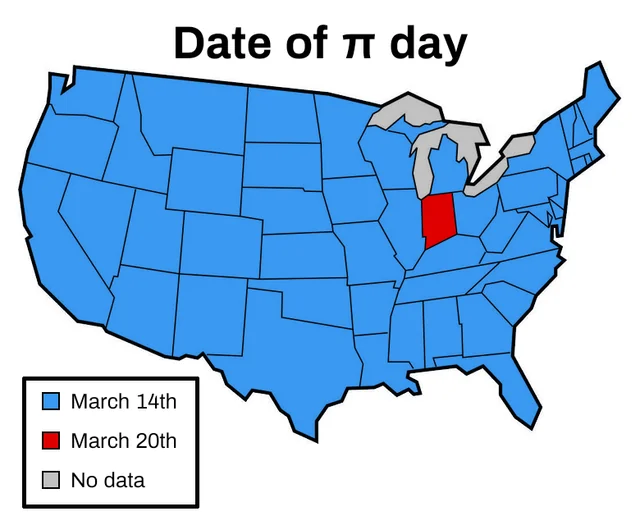
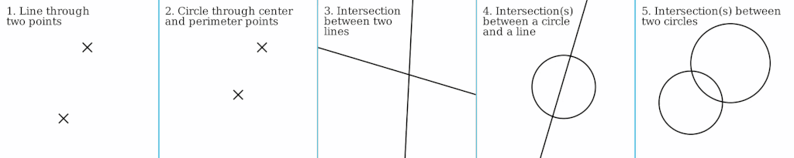

TLDR (click to show/hide)
A funny historical incident where Pi = 3.2 was almost codified into Indiana State Law and some additional mathematical background on the topic of geometric constructions in general for those that are interested.
You'll have to forgive me. I'm writing this article hastily on 3/15 to release as my belated Pi Day post. I was actually searching for an intriguing math fact or some interesting proof to write about on the subject of Pi as I did with Elementary Not Easy: The Irrationality of Pi a few years ago but nothing struck me yesterday until, of course, as I was lying in bed last night. Scrolling through my phone just before sleeping, I saw this meme on Reddit:

Reading into the story behind it a bit, I found it had just enough historical intrigue and a good enough proportion of geometry to talk about. This was the article I wanted to write about and is now my new favorite math fact about Pi (aside from Buffon's Needle).
The Story of the Indiana Pi Bill
Centuries had it been unknown whether squaring the circle was possible with traditional geometric construction (a compass and straightedge). But in 1882 Lindemann and Weierstrass had proven a theorem which, as a consequence, established that the transcendence of Pi which, as a further consequence, made the ancient task impossible. The problem now determined, joined a group of other well known impossible classic constructions of geometry. This did not stop Edward J. Goodwin, a physician from Solitude, Indiana from believing he had a solution 15 years later in 1897. He had published on Goodwin's model circle to the American Mathematical Monthly that in fact there was a solution to the "impossible" construction:
Goodwin's model circle (the proposed solution to squaring the circle with compass and straightedge)
As a gesture of goodwill, he wanted to contribute his finding as a gift to Education in the State of Indiana by codifing his model into law with the ENGROSSED HOUSE BILL No. 246. Now, take a moment to yourself reader, and see the immediate flaw with the model above. With the numbers provided, you can likely prove to yourself fairly quickly that π = 3.2 exactly. This had likely slipped by the legislature since they may not have understood the "proof" that was provided to them.
Luckily, on the day of the bill's proposal, Purdue University mathematics professor Clarence Waldo happened to be present for an unrelated matter (seeking the annual appropriation for the Indiana Academy of Science). Noticing the Bill in the day's schedule along with the impossibility of the result immediately, he discussed it with other senators before it was to be voted on. When it reached the Senate Floor, the senators Waldo had alerted got the bill idefinitely postponed.
The incident reached the Chicago Tribune, Indianapolis News, and other publications which all poked fun.

The Rock Island Argus's cartoon on Goodwin's model circle.
On Non-Impossible Geometric Constructions
Geometric construction dates back to Ancient Greece where mathematicians had first attempted ways to perform math algorithmically via geometry. The most basic of these included the following those to do with points, lines, and circles which could be extended to more complex procedures for finding fractions of angles, n-sided regular polygons, etc:

Basic geometric constructions with compass and straightedge
After centuries, progress stalled until Gauss discovered how to construct a Heptadecagon and eventually Hilbert found a complete set of axioms for geometry describing the field as an axiomatic algebra. I found this to be a pretty cool fact I did not know / think about before which can actually be fairly shortly stated:
Axiom System for Geometry:
-
Primitive Objects
- Point
- Line
- Plane
-
Primitive Relations
- Betweenness (ternary relation on points)
- Lies on (Containment), three binary relations linking points and straight lines, points and planes, and straight lines and planes
- Congruence two binary relations linking line segments and linking angles